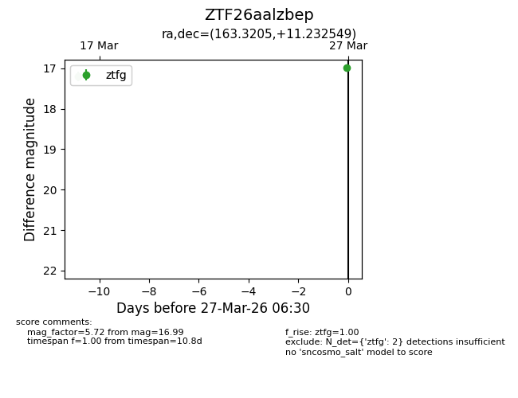
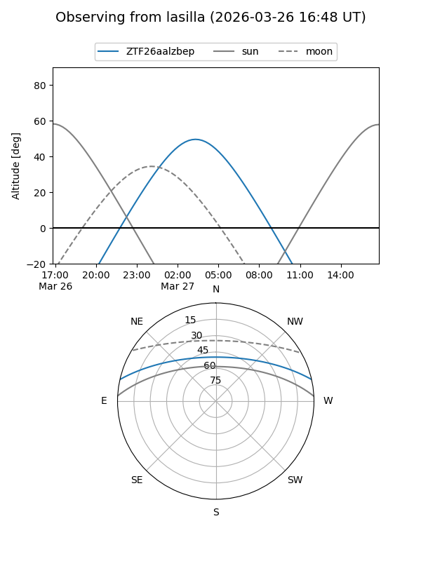
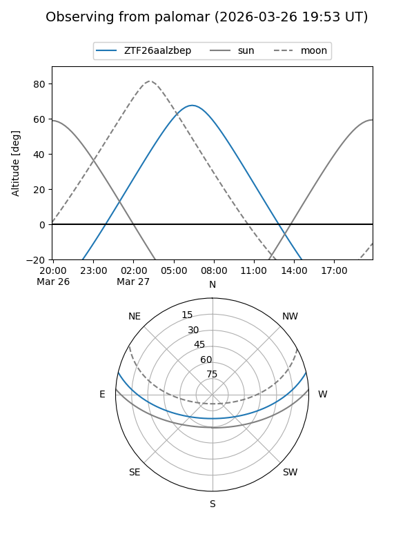

ZTF26aalzbep
Target ZTF26aalzbep at 2026-03-27 06:33
Aliases and brokers:
FINK: link
Lasair: link
ALeRCE: link
alt names
ZTF26aalzbep (ztf,fink_ztf)
Coordinates:
equatorial (ra, dec) = 163.3205,+11.23255
equatorial (HMS+DMS) = 10:53:16.92,+11:13:57.18
galactic (l, b) = (236.9768,+58.02698)
Flags:
Photometry:
last ztfg=16.99
2 ztfg detections
Lightcurve

Visibility


Additional plots